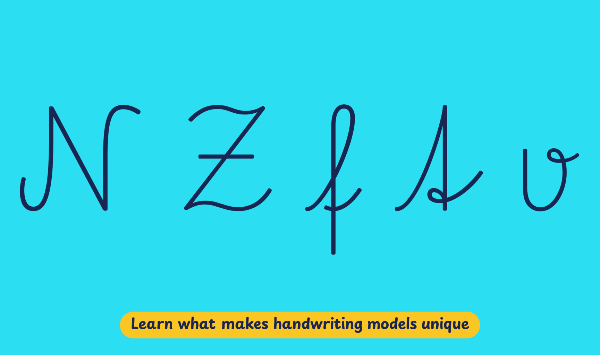

The Austrian Elementary School Curriculum, updated in 2003, stipulates that by the end of the second grade, students should achieve legible and fluent handwriting based on the Österreichische Schulschrift, or Austrian school script. This model was originally created in 1946 drawing upon the foundations of German Sütterlinschrift, but underwent several reforms before its last version was introduced in 1995.
Playwrite Österreich is a variable font with a weight range from Thin (100) to Regular (400), and supports over 150 Latin-based languages.
To contribute, see github.com/TypeTogether/Playwrite.
This cursive style, available in upright and slanted (italic) versions, features oval foundational forms and medium-length extenders. It favors fast writing and it is mostly joined, but some letters with crossbars require pen lifts. Uppercase letters are cursive and semi-joined. Notable shapes include Kurrent-style 't,' an 'f' with a loopless descender, a crossbar in 'Z', and knots in certain lower cases.

Playwrite Österreich appears in font menus with a two-letter country code ‘AT’, Playwrite AT, and features four styles: Thin, ExtraLight, Light, and Regular.
The download .zip file includes the variable font and standard static ttf fonts for each style.
The Playwrite school fonts are based on the findings of Primarium, a groundbreaking educational effort that documents the history and current practice of handwriting models taught to primary school students worldwide. This typographic engine serves teachers, educators, and parents by generating localized libre fonts. These Playwrite fonts are complemented by Playpen Sans, an informal and fun typeface designed for annotations, instructions, and student notes – that also includes emojis.
For more information about the Primarium project, visit primarium.info and to learn more about handwriting education in England, see primarium.info/countries/austria
Windows: Download the font file to your computer. Navigate to where you saved the font file and double-click it to open. Click the "Install" button at the top of the font preview window. The font is now installed and ready to be used across your apps.
macOS: After downloading the font file to your Mac, right-click it in Finder and select "Open With" > "Font Book". Then, click "Install Font" in the font preview window that pops up. The font is now installed and ready to be used across your apps.
The Playwrite font family uses complex OpenType features to generate connected writing. Some common applications require these features to be manually activated.
Note: This font family doesn't include Bold style, so please avoid applying it in text editors. If you use the common 'B' button, you will automatically generate a low-quality style.
Microsoft Word: Go to Format in the Menu bar, select Font, and then the Advanced tab. Activate "Contextual Alternates" and "Kerning for fonts below" to apply these settings to all text sizes.
LibreOffice: To select the different styles, go to Format in the Menu bar, select Character, and use the Typeface menu.
Adobe InDesign: Open the Paragraph Panel and select Adobe "World-Ready Paragraph Composer" from the contextual menu.
Adobe Illustrator: Navigate to Preferences > Type, check the "Show Indic Options" box, and close preferences. Then open the Paragraph Panel and select "Middle Eastern Composer" from the contextual menu.
Adobe Photoshop: Access the Paragraph Panel, then choose "World-Ready Layout" from the contextual menu.
The above instructions are also available in PDF format here